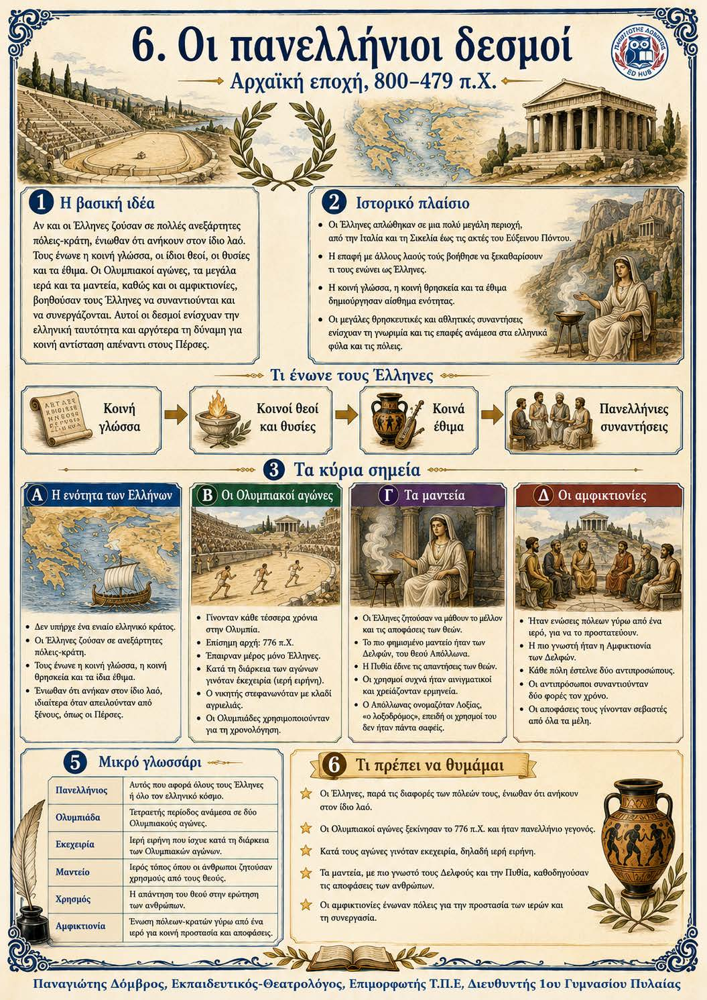

Πληροφοριογράφημα ενότητας
Το πληροφοριογράφημα αυτής της ενότητας δεν έχει ανέβει ακόμη. Οι σημειώσεις παραμένουν πλήρως διαθέσιμες.

Κεφάλαιο 4 · Αρχαϊκή εποχή, 800–479 π.Χ.
Οι Έλληνες ζούσαν σε πολλές ανεξάρτητες πόλεις και δεν είχαν ενιαίο κράτος. Παρ’ όλα αυτά, αισθάνονταν ότι ανήκαν στον ίδιο λαό. Τους ένωναν η κοινή γλώσσα, οι ίδιοι θεοί, οι θυσίες και πολλά κοινά έθιμα. Οι Ολυμπιακοί αγώνες, τα μεγάλα ιερά, τα μαντεία και οι αμφικτιονίες τούς έδιναν ευκαιρίες να συναντιούνται. Οι πανελλήνιοι δεσμοί ενίσχυσαν την κοινή ελληνική ταυτότητα και βοήθησαν αργότερα στην κοινή αντιμετώπιση του περσικού κινδύνου.
